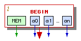
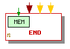
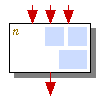
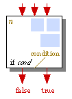
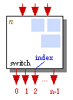
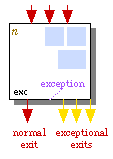
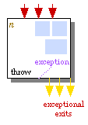
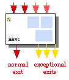
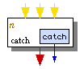
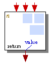

Electrical FireDesignPrimitive Graph FormatControl Layer |
|
In its simplest form, the primitive graph is composed of control nodes linked by control edges. Each control node can contain a number of data nodes (primitives or phi-nodes) to specify actual program operations. An example of the control layer of the primitive graph is listed on the graph example page.
The control flow graph nodes and edges are comprised of the kinds below.
|
|
A forward edge denotes a possible path of normal (non-exceptional) execution from one control node to one of its immediate successors. |
|
|
A backward edge is used instead of a forward edge to denote a backward branch completing a cycle. See control edge details for a more precise definition and properties of backward control flow edges. The target of a backward edge must be an aexc node. We further categorize backward edges into regular backward edges and irregular backward edges. Regular backward edges complete loops. Irregular backward edges occur only in irreducible graphs and are quite rare. |
|
|
A return edge connects the return node to the end node. There is at most one return edge in a control flow graph. The return edge never completes a cycle, so it always behaves like a forward edge. |
|
|
An exception edge denotes the execution path taken when a primitive throws an exception. The exception edge connects the control node that throws the exception to a catch node that catches it or to the end node if the exception is propagated out of the function. Only exception, throw, and aexc nodes can originate an exception edge, and only catch and end nodes can be targets of an exception edge. An exception edge never completes a cycle, so it always behaves like a forward edge. Each exception edge is annotated with a class; that edge only propagates exceptions of that class or one of its subclasses. |
|
 |
The begin node. Each control flow graph must have exactly one begin node. This node provides the starting point for the function's code. The begin node always has exactly one outgoing forward edge. The begin node also hosts arg
primitives that provide the initial memory state and values of all arguments.
The begin node never contains any other data nodes. If the function is not
a static method, a0 is |
|
 |
The end node. Each control flow graph must have exactly one end node. This node provides the stopping point for the function's code. The end node always has one or more incoming control flow edges: either zero or one return edge and zero or more exception edges. The return edge is present if the function can return normally; the exception edges are present if the function can throw an exception to its caller. The end node also hosts one result primitive that consumes the final memory state. The end node may optionally contain one phi-node to select the final memory state from one of several incoming data flow edges. The end node never contains any other data nodes. The end node does not consume the function's return value; use the return node for that. The return node is separate from the end node because throwing an exception can bypass the return. |
|
 |
A block node has a single exit. We use block nodes to denote code within a basic block that ends with a control flow merge (as opposed to one of the other things that can end a basic block such as a conditional branch, a potential exception throw, or a return). A block node typically contains one or more data nodes (primitives or phi-nodes), all of which are executed when control enters the block. It is possible for a block node to be empty, although optimizations typically remove such nodes. Every block node contains one or more incoming forward edges and exactly one outgoing forward or backward edge. |
|
 |
An if node is a basic block ending
with an Every if node contains one or more incoming forward edges and zero or more data nodes, all of which are executed when control enters the if node. |
|
 |
A switch node is a basic block
ending with a dense Every switch node contains one or more incoming forward edges and zero or more data nodes, all of which are executed when control enters the switch node. |
|
 |
An exception node is a basic block that contains one primitive p that sometimes (but not always) throws an exception. In addition, the exception node can contain any number of other, ordinary data nodes. In diagrams we mark primitive p by connecting it to the exception node with a dotted line (which technically is not a data edge). Every exception node contains one or more incoming forward edges and one or more data nodes, all of which are executed when control enters the node. Note that primitives other than p are always executed regardless of whether p throws an exception or not. If p does not throw an exception, execution proceeds along the leftmost control flow edge (labeled "normal exit"), which must be a forward or backward edge. If the compiler can determine that p always throws an exception, then it will use a throw node instead of an exception node. If p throws an exception, execution proceeds along the first (leftmost) exceptional exit control flow edge that accepts the exception. Each of these exception edges is annotated with the class of exceptions it accepts. If primitive p is the one that can cause an exception in exception node E, it is not legal to place another primitive q that uses one of p's outputs in node E. Instead, use a separate control node to hold q. |
|
 |
A throw node is a variant of an exception node that always throws an exception so that it has no normal exit control flow edge. The same rules apply as for exception nodes. |
|
 |
An aexc node (asynchronous exception node) is like an exception node except that the source of exceptions is an explicit check for asynchronous exceptions instead of an exception-throwing primitive. During program execution, asynchronous exceptions are normally queued until the program reaches the end of either an exception node or an aexc node, at which point the asynchronous exception can be thrown. Every aexc node contains one or more incoming forward or backward edges and zero or more data nodes, all of which are executed when control enters the node. An aexc node usually includes both some forward and some backward incoming control flow edges, although it is possible for an aexc node to have only forward or only backward incoming control flow edges (the latter case cannot occur immediately after the control graph's nodes are numbered, but it could result if some control edges in the graph are deleted by optimizations). If the aexc node does not throw an exception, execution proceeds along the leftmost control flow edge (labeled "normal exit"), which must be a forward or backward edge. The exception edges behave just like in an exception node. Note that only aexc nodes allow an incoming control flow edge to be backward, so every backward edge must point to an aexc node. |
|
 |
A catch node provides the starting point for an exception handler. A catch node has one or more incoming control flow edges, all of which must be exception edges. The catch node has exactly one outgoing forward or backward edge. The catch node has at most one primitive, which must be a catch primitive. However, since it can have more than one incoming edge, a catch node may has any number of phi-nodes. When a thrown exception is propagated down an exception edge to a catch node, the exception object becomes available as the output of the catch primitive and execution follows the control edge leaving the catch node. |
|
 |
A return node is like a block node except that the return node also collects the values, if any, to be returned from the function. The values come from data flow edges whose types are appropriate to hold the function's return values. Java allows at most one return value, so the return nodes with more than one return value will not be generated, but they are provided for generality. There can be at most one return node in a function. A return node may contain data nodes, all of which are executed when control enters the node. Every return node contains one or more incoming forward edges and exactly one outgoing return edge that points directly to the end node. Even if a function has no return values (has return type |
Every node starts by having a node number (represented as n in the node diagrams above) that is the node's number in a depth-first order of the graph; see control edge details. These node numbers may not be preserved by optimizations that take place on the control graph, but the separation of control edges into forward and backward edges will remain.
The primitive graph's control nodes and edges satisfy the following constraints:
We can (conceptually) evaluate a function represented as a primitive graph by starting at the begin node, following its control flow edge, and evaluating the primitives and phi nodes inside each control node we encounter. When we get to a control node with multiple exits, the node specifies which one to take via a conditional or exception-throwing expression. We stop when we reach the end node.
Each control node contains zero or more data nodes that are evaluated together (subject to internal dependencies such as one primitive using the results from another). When evaluation enters the control node, it is always safe to evaluate all data nodes within it. Evaluation may not enter a control node part way into it. Conditionals and exceptions are represented by multiple edges leaving a control node. Merges of control flow are represented by multiple edges entering a control node.
At this point we don't support subroutines as part of the control graph.
Instead, the primitive graph generator either expands JSR and
RET bytecodes into inline code or converts subroutines into
functions.
Asynchronous exceptions must be handled within a bounded amount of time of being raised. To achieve this, we allow asynchronous exceptions to interrupt execution either:
To make sure that the amount of time to reach one of the above three points is bounded, the translator inserts an aexc node into every cycle in the control flow graph.
The translator assumes that asynchronous exceptions may not occur at any other point, such as inside basic blocks. Without this assumption it would be impossible to do most code transformations because they would subtly alter the Java semantics of asynchronous exceptions.
We prepend an aexc node A containing a check for asynchronous exceptions to each node H that has at least one incoming back edge. This bounds the amount of execution that can take place between checks for asynchronous exceptions. As a side benefit, this transformation also makes the end node reachable from every cycle, which helps satisfy constraint 6 above for infinite loops. For simplicity we retarget all forward edges pointing to node H to point to node A instead.
If an exception handler is allowed to handle exceptions arising in itself, we may encounter a situation in which a catch node is the head of a cycle in the control flow graph. Such a graph would violate our CYCLES1 constraint, so in such a situation we transform the catch node into several catch nodes.